Redes Neurais
Aprenda sobre redes neurais, a base de muitos algoritmos populares hoje, como ChatGPT, Stable-Diffusion e muitos outros.
A
Machine Learning University (MLU)
é uma iniciativa educacional da Amazon criada para ensinar a
teoria e a aplicação prática do aprendizado de máquina.
Como parte desse objetivo, o
MLU-Explain existe para ensinar
conceitos importantes de aprendizado de máquina por meio de
ensaios visuais de forma divertida, informativa e acessível.
Esta é uma tradução para o português brasileiro do
projeto original.

Explore os Artigos Publicados...
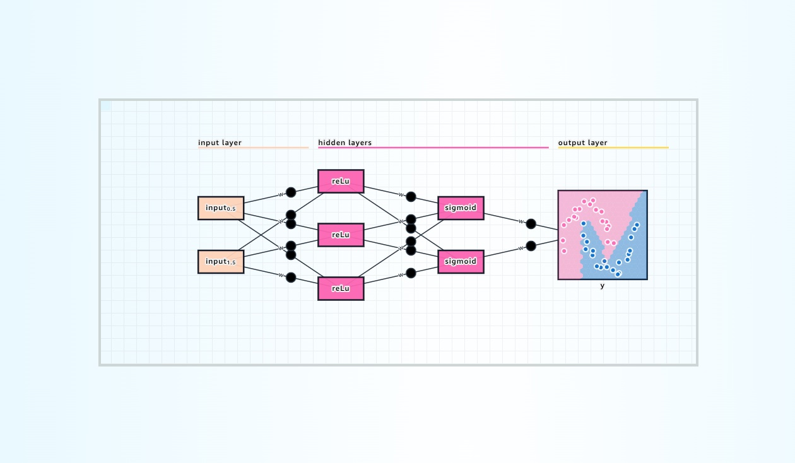
Aprenda sobre redes neurais, a base de muitos algoritmos populares hoje, como ChatGPT, Stable-Diffusion e muitos outros.
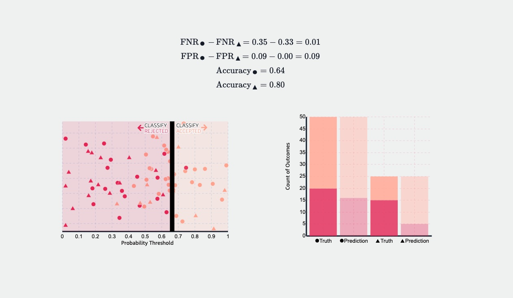
Explore a igualdade de probabilidades (equality of odds), uma métrica usada para quantificar injustiça e remover viés de modelos de aprendizado de máquina.
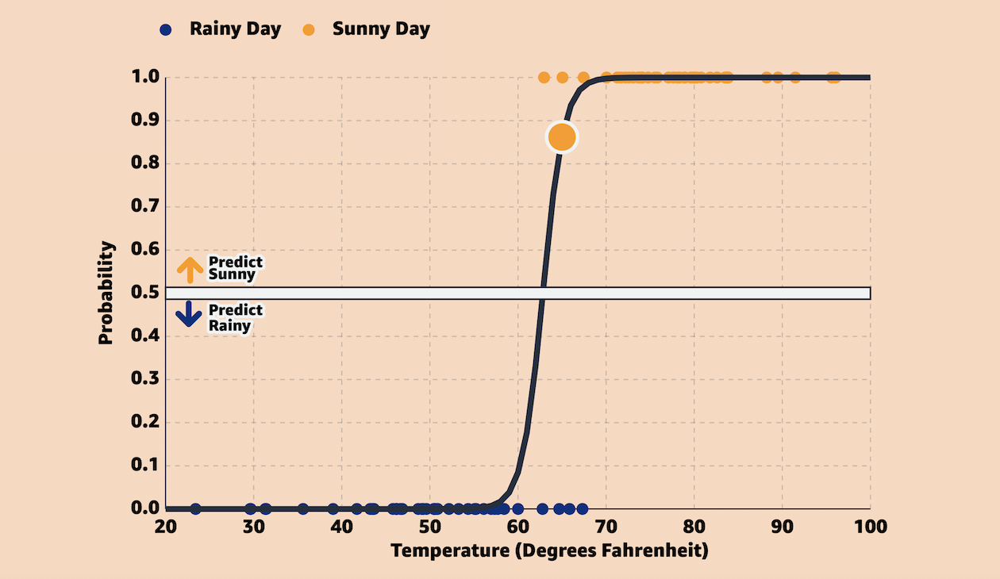
Aprenda como a regressão logística pode ser usada para classificação binária em aprendizado de máquina por meio de um exemplo interativo.

Aprenda interativamente sobre modelos de regressão linear como são comumente usados no contexto de aprendizado de máquina.
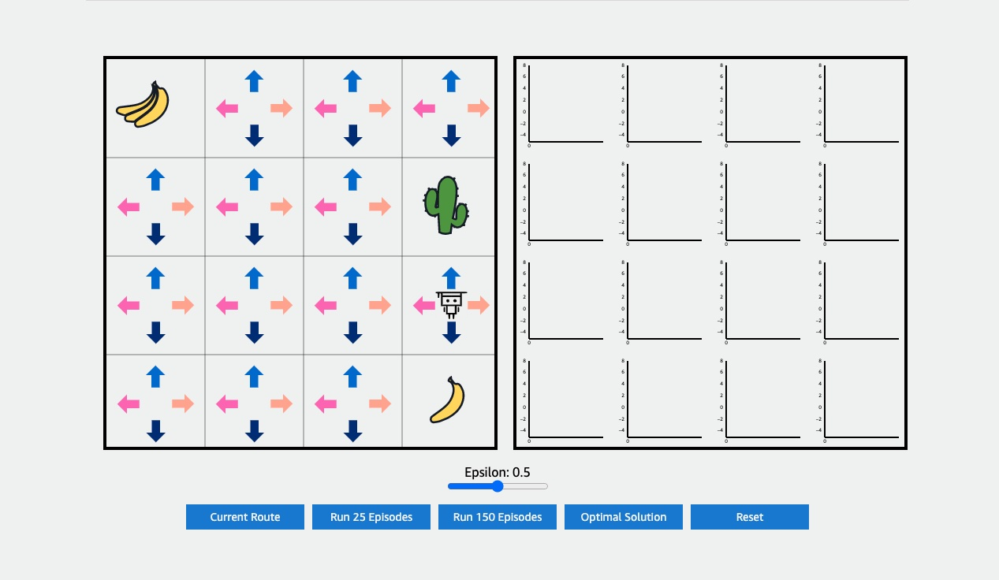
Aprenda sobre Aprendizado por Reforço (Reinforcement Learning) e o dilema exploração-explotação com este artigo interativo.
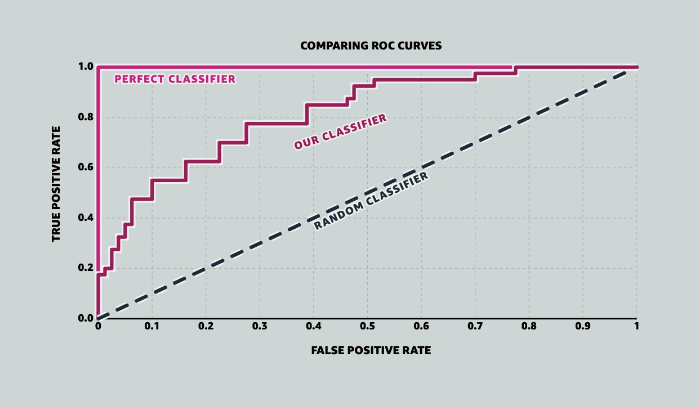
Uma explicação visual da Curva ROC (Receiver Operating Characteristic), como ela funciona com um exemplo interativo ao vivo, e como se relaciona com a Área Sob a Curva (AUC).
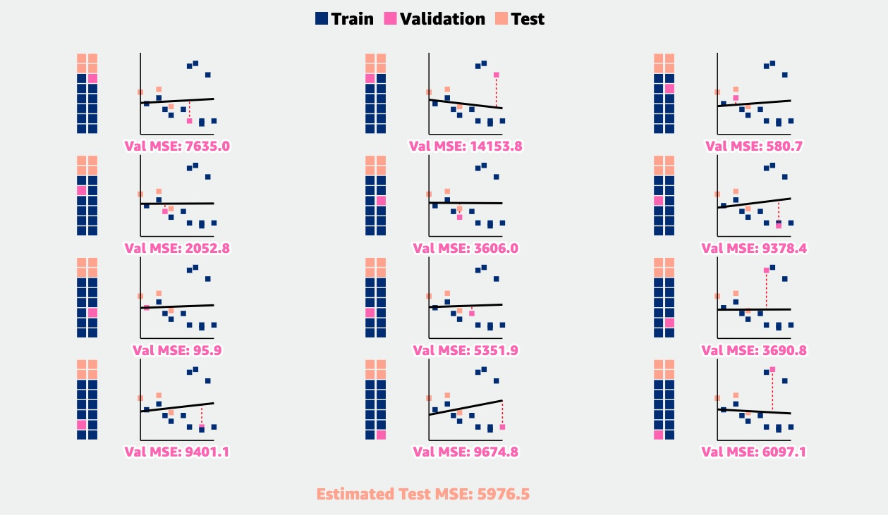
Validação Cruzada K-Fold: uma técnica de reamostragem para melhorar as estimativas das taxas de erro de teste em comparação com um simples conjunto de validação.
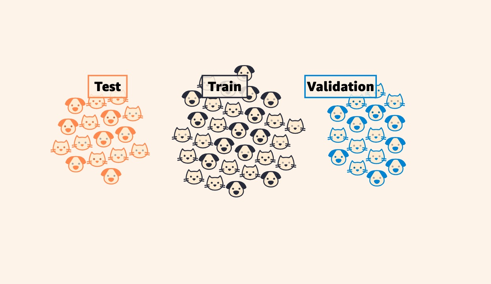
Aprenda por que é uma boa prática dividir seus dados em conjuntos de treino, teste e validação, e explore a utilidade de cada um com um modelo de aprendizado de máquina ao vivo.

Quando se trata de avaliar modelos de classificação, acurácia frequentemente é uma métrica inadequada. Este artigo aborda duas alternativas comuns, Precisão e Revocação, além do F1-score e Matrizes de Confusão.

Aprenda como o voto majoritário e a aleatoriedade bem aplicada podem estender o modelo de árvore de decisão para um dos algoritmos mais utilizados em aprendizado de máquina, a Floresta Aleatória.
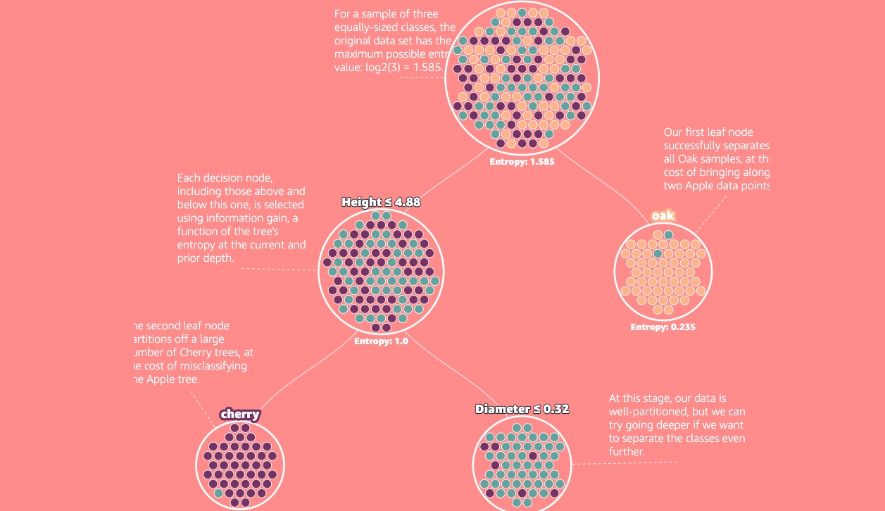
Explore um dos algoritmos supervisionados mais populares do aprendizado de máquina: a Árvore de Decisão. Aprenda como a árvore faz suas divisões, os conceitos de Entropia e Ganho de Informação, e por que ir fundo demais é problemático.
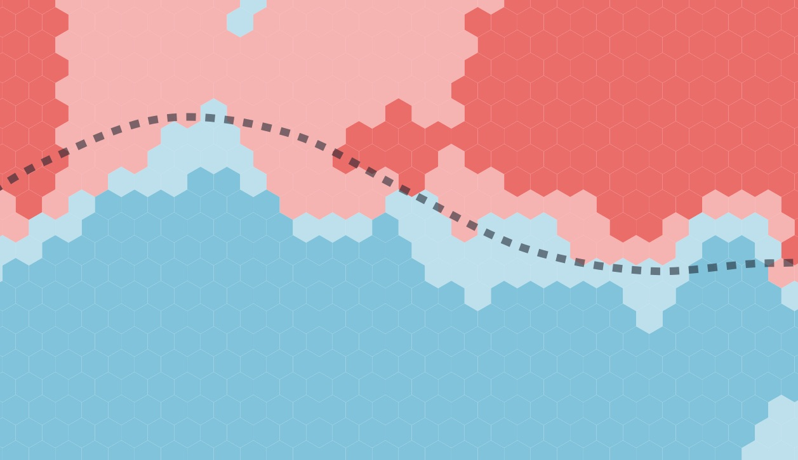
Entenda o tradeoff entre modelos sub e sobreajustados, como isso se relaciona com viés e variância, e explore exemplos interativos relacionados a LOESS e KNN.
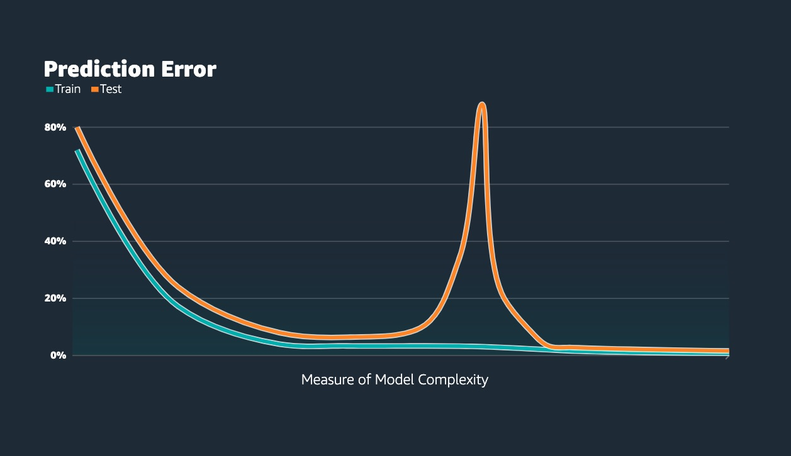
Conheça o fenômeno da dupla descida no aprendizado de máquina moderno: o que é, como se relaciona com o tradeoff viés-variância, a importância do regime de interpolação e uma teoria sobre o que está por trás.
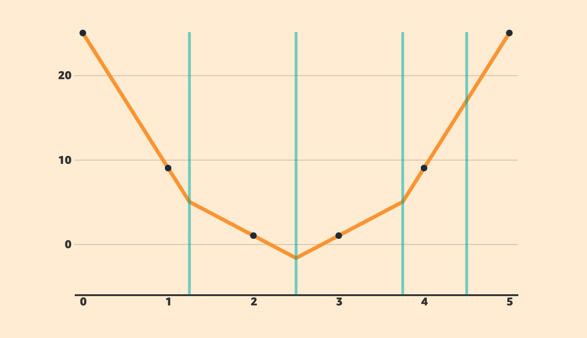
Aprofunde seu entendimento do fenômeno da dupla descida. O artigo expande o exemplo de spline cúbico introduzido na Dupla Descida 1, descrevendo em detalhe matemático o que está acontecendo.